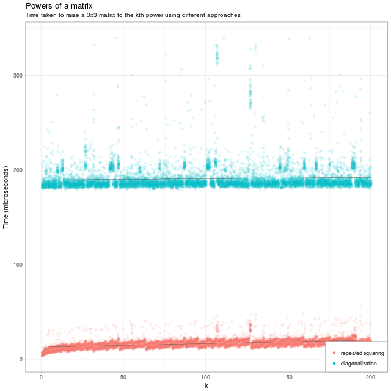

Fast (Matrix) Exponentiation in R
by David JonesA few days ago, Eric published the blog post titled "Taking powers of a matrix in R". It's quite a nice post, and certainly re-introduces me to some linear algebra which I may have once known. Who can say.
Let's say want to raise a matrix M to some power k (exponentiation). Because I got annoyed with unicode superscripts, I'm going to use the notation pow(M, k) for this.
Eric's (cute) observation is that we can decompose a matrix M into a diagonal form PDP⁻¹; then pow(M, k) is P(pow(D, k))P⁻¹. Since D is diagonal, it's far faster to exponentiate it than a general matrix.
Eric discusses one drawback to this approach:
- only better for large n (n > 80)
There are a couple of other drawbacks:
- complex arithmetic (for real or integer matrixes);
- not exact for integer inputs;
- not actually very fast.
The fast way is repeated squaring. To take an example: pow(M, 8) is M-squared-squared-squared. Instead of 8 (or 7) multiplications, we can use 3 squarings (which is 3 multiplications).
So, a bit more formally:
pow(M, 2*n) is square(pow(M, n));
pow(M, n+1) is M*pow(M, n).
This leads to a recursive scheme to raise a matrix M to the nth power. It has two recursive cases, one when n is even (n is halved), one when n is odd (n is reduced by one). Both of these reduce n, so eventually we hit the base case, which is that pow(M, 0) is I.
In R code:
pow_sq_recursive = function (A, k) {
if(k == 0) {
# identity
diag(1, nrow(A))
} else if(k %% 2 == 1) {
A %*% pow_sq_recursive(A, k-1)
} else {
pow_sq_recursive(A %*% A, k %/% 2)
}
}
(I couldn't avoid also writing the true iterative version of this function, see the github repo for details)
I have shamelessly stolen Eric's code to produce a retread of his lovely graph:

My favourite book, Structure and Interpretation of Computer Programs, has a section on this algorithm in Chapter 1.